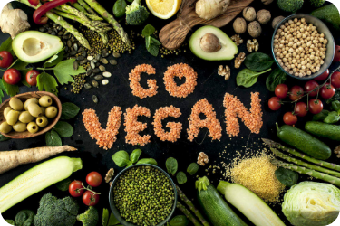

|
 |
||
|---|---|---|
|
Apa itu vegan? |
Kata vegan pada awalnya didefinisikan sebagai pola makan yang bebas dari daging, produk susu, dan telur. Istilah ini sekarang juga mengacu pada barang apa pun, mulai dari sepatu hingga sampo, yang dibuat tanpa produk hewani. |
|
Kenapa vegan? |
Gaya hidup vegan mencegah banyak pembantaian dan penderitaan hewan. Ini menawarkan cara ampuh untuk mengecilkan jejak lingkungan kita, terutama yang berkaitan dengan perubahan iklim. Dan pola makan vegan yang terencana dengan baik dapat memicu tingkat kebugaran tertinggi, sekaligus mengurangi risiko berbagai penyakit kronis. Plus, makanannya sangat lezat dan tersedia lebih banyak setiap tahun. |
|
Menjadi vegan? |
Ingatlah tujuan akhir Anda, tetapi lakukan dengan kecepatan Anda sendiri. Beberapa orang berhasil menjadi vegan dalam semalam dan jika itu pendekatan yang tepat untuk Anda, fantastis. Tapi jangan khawatir jika Anda merasa membutuhkan lebih banyak waktu. Seperti perubahan gaya hidup lainnya, menjadi vegan tidak hanya membutuhkan waktu untuk membiasakan diri, tetapi juga membutuhkan waktu untuk menentukan apa yang paling cocok untuk Anda. |
|